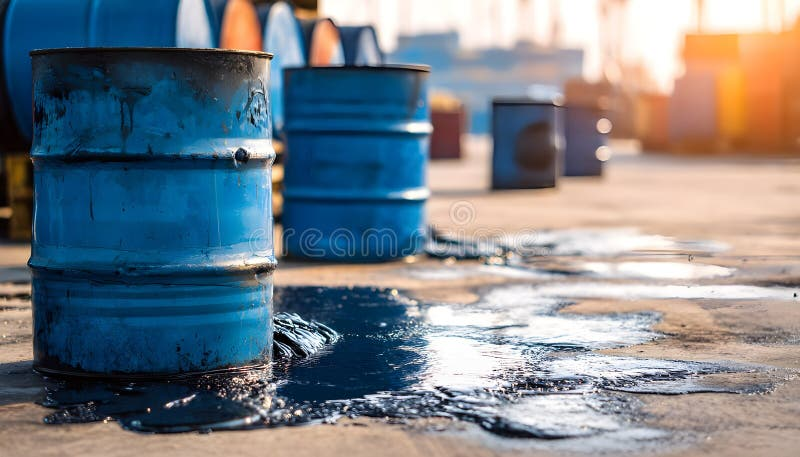
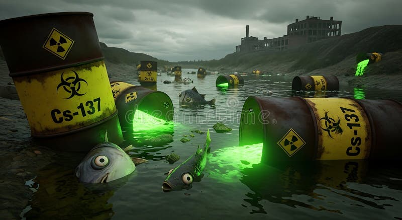

A clear concise addressing of chemical nature is extremely needed to address such contradictory philosophy to create an avenue to switch ideology to deeply research the pattern to reduce disaster related events caused by the climate and pandemics. If humanity at this technological world can speak, eat, drink, wash, think, talk, hear, see, breath and rest with the chemical language then the earth will reply with a positive answer.
QUANTITY AND IMPACT OF HAZARDOUS GAS
Different types of hazardous chemical waste require specific management process and procedures with their estimated volume of discharged waste. None-hazardous and hazardous are all regarded as contagious according to research and we have gone through and realise that both are classified under highly contagious. The reasoning principles of this concept is to conclude that, there are relative possibility of reaction with other metals or any chemical sources that can turn the face of global view into an unexpected global climate disasters, pandemic dominations, evolution disorders, neurotics effects or a changes in appetite.
There are billions and trillion volumes of hazardous chemical waste are managed where the storage are unpredicted in any circumstances in which we predicted that the world is sitting on a time bomb.
There were scientists who had gone as far as what I’m presenting here in a single sentence and never predicted the actual impacts and effects because most effects are not visible to nagged eyes. The gap between humanity and chemical pollution is just an inch away at this time.
ZERO TOLERANCE OF CHEMICAL WASTE DEPOSITION
The targeted innovation research is to invent chemical impulse that go against any types of hazardous chemical waste into a characteristics termination from the face of this earth. This program says NO to any chemical waste storage units, lockable avenues, deposition sites, trashing and even neutralizing neither ventilating, burning or segregation.
We purely studied chemical characteristics and developed a solution that can terminate any types of chemical nature and at the same time it will decarbonise the atmosphere. The subject is projected to two in one major achievement and also helps in other stable environmental effect, development stability and cost reduction in large areas of the global agendas.
The facilitating reactor is so simple that we can start terminating any types of chemical waste and decarbonising the atmosphere in less time due cognition we acquire to understand the nature of chain reactions that helps to terminate wastes.
The table below shows hazardous chemical waste storage sites where our invention intends to terminate.
| Current Storage Sites | Chemicals Waste Type | Industry Type |
|---|---|---|
| Underground Storage Tanks | Any Type | All Chemical Waste in Liquid & Solid |
| Illegal Waste Dumping | Any Type | All Chemical Waste in Liquid & Solid |
| Landfills | Any Type | All Chemical Waste in Liquid & Solid |
| Incinerations | Any Type | All Chemical Waste in Liquid & Solid |
| Bioremediation Processes | Any Type | All Chemical Waste in Liquid & Solid |
| Phytoremediation | Any Type | All Chemical Waste in Liquid & Solid |
| Recycling | Any Type | All Chemical Waste in Liquid & Solid |
| Sea Floor Dumping | Any Type | All Chemical Waste in Liquid & Solid |
| Chemical Neutralisations | Any Type | All Chemical Waste in Liquid & Solid |
| Evaporations | Any Type | All Chemical Waste in Liquid & Solid |
| Sedimentations | Any Type | All Chemical Waste in Liquid & Solid |
| Filtrations | Any Type | All Chemical Waste in Liquid & Solid |
| Encapsulating | Any Type | All Chemical Waste in Liquid & Solid |
| Underground Injections | Any Type | All Chemical Waste in Liquid & Solid |
| Open Pits | Any Type | All Chemical Waste in Liquid & Solid |
| Holding Ponds | Any Type | All Chemical Waste in Liquid & Solid |
| Fissures | Any Type | All Chemical Waste in Liquid & Solid |
| Treatment | Any Type | All Chemical Waste in Liquid & Solid |
| Ion Exchanges | Any Type | All Chemical Waste in Liquid & Solid |
| Precipitations | Any Type | All Chemical Waste in Liquid & Solid |
| Oxidations | Any Type | All Chemical Waste in Liquid & Solid |
| Impervious | Any Type | All Chemical Waste in Liquid & Solid |
| Reductions | Any Type | All Chemical Waste in Liquid & Solid |

Large volumes of hazardous waste are generated and managed throughout the world. The study highlights concerns regarding long-term storage, environmental exposure, and contamination.

There have been numerous global theoretical models, policies, agendas, programs. Amendment, meetings, conferences, exhibitions, strategies, regulations and constitutions of how to reduce hazardous chemical waste since 1980’s to this date – most nobly and wedge approach, which focuses on chemical waste management categorisations programs into emissions but core fundamentals of deleting hazardous waste remains or technically impossible or incapable of producing permanent termination. The strength of this research invention is a proven methods that went beyond the historical capacity that can stable the hazardous waste pollutions.
This research supports all models and theory in that hazardous chemical waste reduction to its simplification method but it challenges the same theory, modelling, policies, strategies, agendas and current programs built to prevent wastes.